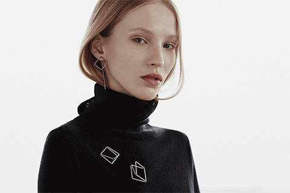
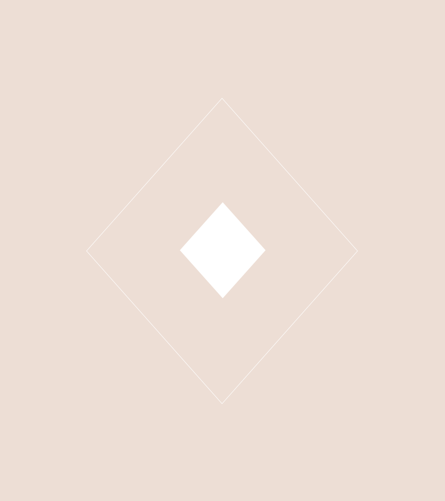

It is a pleasure to observe the different forms the geometric shapes take on when draped around the arm, the neck, the finger or the ear. It is fascinating how they change their appearance when the person wearing them changes posture or position.�
Right Line - Agata Bielen

The most simple forms create the strongest visual effects.